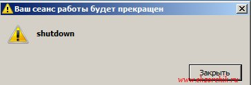
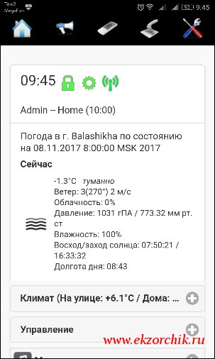

Итак по мере того, как начинаешь пользоваться изучаемым и из просмотра различных видео обзоров встает задача на первый взгляд тривиальная, но не все так легко как может показать на первых взгляд. Сегодня речь пойдет, как используя сервис MajorDoMo производить удаленное выключение систем Windows и Ubuntu дома, где в роли командного устройства выступит Ваш смартфон/планшет под управлением операционной системы Android с установленным приложением MajorDroid.
Что лень выключить за собой компьютер?, да не ужели для этого нужно думать как сделать это удаленно и главное голосом. Тут можно возразить, лишний опыт никогда не будет лишним, да и пусть работающий сервис MajorDoMo выполняет столь важную задачу, как выключение ПК после того, как я ушел из комнаты, ложусь спать и т. д. Главное что данную задачу я решил поставив себе задачу, ведь она практична и полезна. В текущее время смартфон это не просто средство общения, но и полезный друг всей жизни который всегда при Вас, он дает общение, доступ в интернет, развлечения, работу так пусть и будет связующим звеном между Вами и сервисом MajorDoMo.
Сервис MajorDoMo развернут на базе серии заметок моего Youtube-канала.
Шаг №1: Чтобы выключить Windows 7 SP1 x86/x64 систему в локальной сети (система не в домене, а в локальной группе). Ниже Как я подходил к решению данной задачи.
Сделать PHP скрипт с формой html где я вбиваю IP, User, Password и нажимаю «Выключить» и в ответ удаленный компьютер выключается. Но после от формы я отказался.
pi@raspberrypi:~ $ sudo rm -Rf /var/lib/apt/lists
pi@raspberrypi:~ $ sudo apt-get update && sudo apt-get upgrade -y
pi@raspberrypi:~ $ sudo apt-get install samba-common-bin -y
На заметку: на своем домашнем компьютере я работаю с правами Администратора, UAC включен и обязательно использую связку Login + Password, а до этого следует нажать сочетание клавиш Ctrl + Alt + Del.
pi@raspberrypi:~ $ sudo net rpc shutdown -t 3 -f -C shutdown -U Admin%Aa1234567 -I 10.9.9.96
Could not initialise pipe winreg. Error was NT_STATUS_OBJECT_NAME_NOT_FOUND
Чтобы все таки команда выше отработала нужно на Windows системе сделать следующее:
включить службу «Удаленный реестр»
C:\Windows\system32>sc config RemoteRegistry start= auto
C:\Windows\system32>sc start RemoteRegistry
выключить профили встроенного брандмауера
C:\Windows\system32>netsh advfirewall set allprofiles state off
Пробую еще раз запустить команду с Raspberry Pi 3 на выключение Windows системы:
pi@raspberrypi:~ $ sudo net rpc shutdown -t 3 -f -C shutdown -U Admin%Aa1234567 -I 10.9.9.96
Shutdown of remote machine failed
result was: WERR_CALL_NOT_IMPLEMENTED
В этом случае на Windows системе нужно сделать следующее:
C:\Windows\system32>reg add HKLM\SOFTWARE\Microsoft\Windows\CurrentVersion\Policies\System /v LocalAccountTokenFilterPolicy /t REG_DWORD /d 1 /f
Операция успешно завершена.
C:\Windows\system32>shutdown /r /t 3
Пробую еще раз запустить команду с Raspberry Pi 3 на выключение Windows системы:
pi@raspberrypi:~ $ sudo net rpc shutdown -t 3 -f -C shutdown -U Admin%Aa1234567 -I 10.9.9.96
Shutdown of remote machine succeeded
Заработало, Windows 7 x86/x64 SP1 Pro успешно выключилась и на экране уведомление что система выключается:

В этом окне можно написать все что необходимо знать пользователю почему его система выключилась.
На заметку: И с моим тестовым паролем 712mbddr@ выключение также происходит.
Шаг №2: Чтобы теперь сервис MajorDoMo смог выключить Windows систему нужно проделать следующие настройки
pi@raspberrypi:~ $ sudo visudo
www-data ALL=(ALL) NOPASSWD:ALL
Чтобы сценарий выключения Windows компьютера отработал нужно добавить сценарий:
http://IP&DNS — Панель управления — (Объекты) Сценарии — Добавить новый сценарий
и нажимаю «Добавить», затем Код: PHP
$shutdown = shell_exec("/usr/bin/net rpc shutdown -t 3 -f -C shutdown -U Admin%Aa1234567 -I 10.9.9.96");
После нажимаю «Сохранить»
Шаг №3: Теперь когда есть отрепетированные строки выключения Windows системы исполнить задуманную задачу через MajorDoMo можно следующими способами:
http://IP&DNS — Панель управления — (Объекты) Шаблоны поведения — Добавить новую запись
нажимаю «Добавить»
и нажимаю «Сохранить»
Теперь если на главной странице набрать команду: «выключить комп» и нажать «Отправить», команда успешно отрабатывает и удаленная система указанная в Сценарии выключается.
либо через приложением «MajorDroid»
Включаю свой смартфон Huawei Honor C5, запускаю Play Market, вбиваю в поиск слово: majordroid и вижу среди найденного несколько одинаково обозванных приложений, я же использую MajorDroid (от Artem Galaktionov), устанавливаю его.
После установки запускаю, тут нужно настроить само приложение, перехожу в элемент настройки «Настройки»
Кнопка 1 → shutdown_windows
и если все настройки в программе сделаны корректно, то перейдя на главную страницу приложения MajorDroid вы должны увидеть свою страницу, в моем же случае это страница с текущей погодой от сервиса OpenWeatherMap.

если сказать голосом в предварительно выбранное меню с иконкой микрофона слово: «выключить пк», то отработает «Шаблон поведения»
если перейти в меню с иконкой изображенного пульта и нажать на кнопку 1, то отработает «Скрипт»
Итого: Задача по удаленному выключению домашнего ПК через сервис MajorDoMo выполнена.
На заметку: Важно чтобы на учетную запись Windows обладающую правами локального администратора был установлен логин и пароль
Шаг №4: Как с Raspbian Jessie выключить домашнюю Ubuntu Trusty Desktop (настроен AutoLogon) станцию через PHP скрипт:
pi@raspberrypi:~ $ sudo apt-get install sshpass -y
перезагрузить систему:
pi@raspberrypi:~ $ /usr/bin/sshpass -p 712mbddr@ ssh -o StrictHostKeyChecking=no ekzorchik@10.9.9.108 'echo 712mbddr@ | sudo -S shutdown -r now'
выключить систему:
pi@raspberrypi:~ $ /usr/bin/sshpass -p 712mbddr@ ekzorchik@10.9.9.108 'echo 712mbddr@ | sudo -S poweroff'
и с учетом все этого, PHP скрипт будет следующим и делается он по аналогии, как я выключал Windows станцию.
say("Выключаю домашний компьютер",2);
$shutdown = shell_exec("/usr/bin/sshpass -p 712mbddr@ ssh -o StrictHostKeyChecking=no ekzorchik@10.9.9.108 'echo 712mbddr@ | sudo -S shutdown -r now'");
10:07 Алиса: Выключаю домашний компьютер
10:07 Admin: выключить компьютер
Не спорю, что данную задачу можно дополнить такими шагами, как проверка что компьютер выключен, есть ли связь с данным компьютером, отработала ли команда т. д. Если кому надо, то он уже сам должен разобраться с этим.